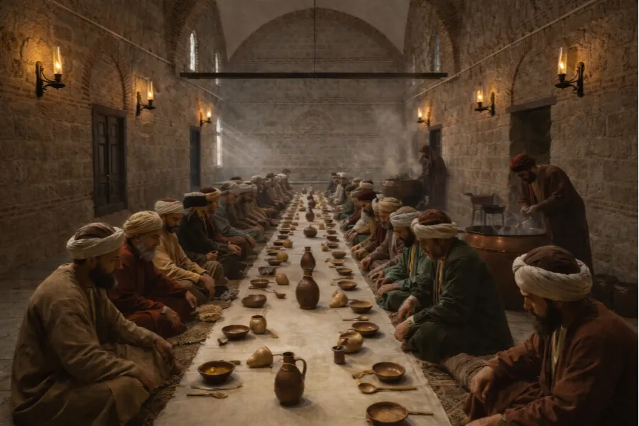
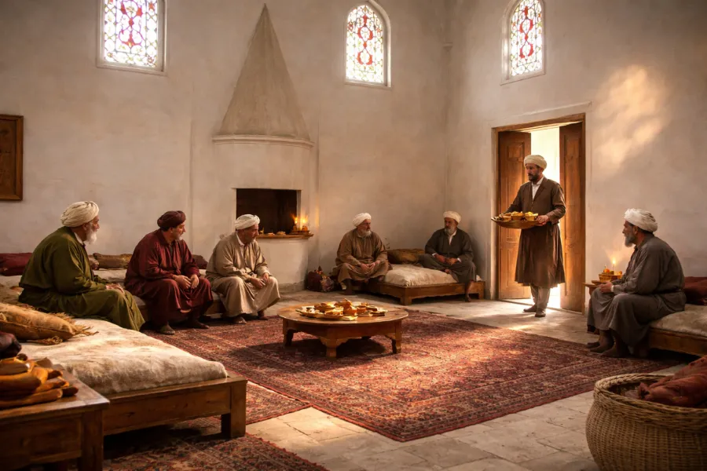
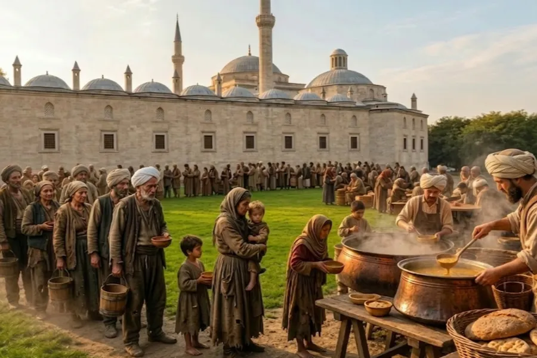
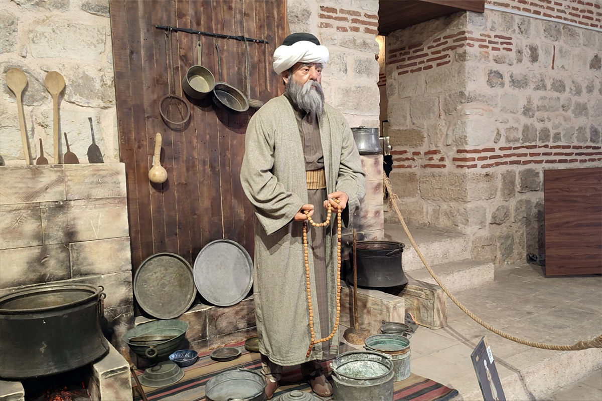
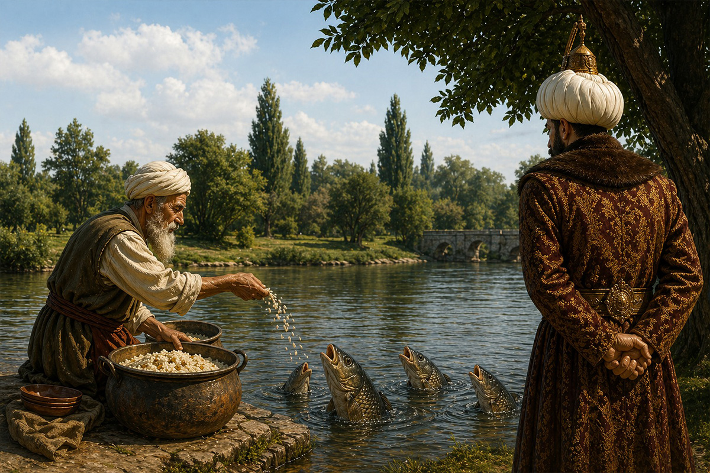
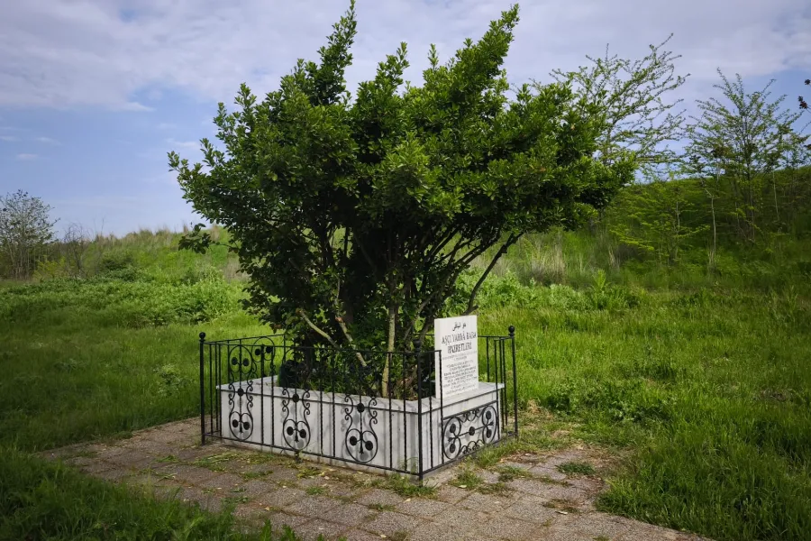

İmarethane, Sağlık Müzesi'nin Darüşşifa ve Tıp Medresesi'nden sonra 2020 yılında hayata geçirilmiş üçüncü bölümüdür. Külliye yapıları içinde, doğu yönünde bulunan geniş yapının içinde yer alır. Mahalleye de ismini vermiş olan imaret; yemeklerin pişirildiği geniş mutfak ve hemen bitişiğinde yemeklerin yenildiği aşevinden oluşur.

Vakfiyeye göre bu alanda günde üç öğün yemek pişirilir; hem hasta yakınları hem medresede eğitim gören talebeler hem de külliyede çalışan iki yüzün üzerindeki personel burada yemek yerdi. Bu imaretten ayrıca fakir fukaraya da yemek dağıtılırdı.

Sağlık Müzesi'nin bu bölümü de diğerleri gibi mekânın ruhuna uygun olarak mankenlerle canlandırılmış olup ziyaretçilerine Osmanlı imaret kültürünü anlatmakta, onları adeta bir zaman yolculuğuna çıkarmaktadır. Bu bölümde ayrıca döneme ait orijinal bakır kaplar, havanlar ve saklama küpleri sergilenmektedir.
İmaretin hemen arka tarafında, efsanelere konu olan Aşçı Yahya Baba Türbesi bulunmaktadır.

"Bereket ihsan eyle ya Rabbim…"
Anlatılanlara göre külliyenin banisi Sultan II. Bayezid Han döneminin aşçıbaşısı Yahya Baba, çok lezzetli pilav yaparmış. Ağzından dökülen dualarla pilavı karıştırır, "Bereket ihsan eyle ya Rabbim." diyerek tencerenin kapağını kapatırmış. Pişen pilav öyle bereketli olurmuş ki bütün hastaları doyurur, hatta artarmış. Yahya Baba da artan pilavı dökmez; götürür, Tunca Nehri'ndeki balıklara yem olarak verirmiş.

Kilercibaşı, Yahya Baba'nın artan pilavları nehre döktüğünü görünce her gün kendisine verilen pirincin miktarını gün be gün azaltmaya başlamış. Yahya Baba, pirinç her defasında azalsa bile yine dualarla pilavı yapar; hem hastalara hem de balıklara yedirirmiş. En son verilen pirinç miktarı bir avuca kadar düşmüş. Buna rağmen Yahya Baba, dualarla yaptığı pilavla bütün hastaları doyurmakla kalmamış, balıklara da yine pay ayırmayı başarmış. Bu durum sonunda padişaha kadar ulaşmış.
Hadiseyi yerinde görmeye karar veren sultan, Tunca Nehri kenarına Yahya Baba'dan önce varıp saklanmış. Yahya Baba, balıkların hakkını verip geri dönmek üzereyken padişah gizlendiği yerden çıkarak, "Bre, sen hastaların nafakasını suya mı dökersin?" diye kükremiş.

Yahya Baba tutulup kalmış. Hiçbir şey söyleyememiş. Öylesine mahcup olmuş ki utancından secdeye kapanıp Allah'a sığınmış. Ancak balıklar, kafalarını sudan çıkararak, "Koca padişah bizim rızkımıza mı göz diker?" diyerek dile gelmişler. Hatasını hayretler içinde fark edip üzülen padişah, Yahya Baba'nın başını secdeden kaldırmasını beklemiş ama nafile. Bu iyiliksever adam çoktan ruhunu teslim etmiş…
İmaretin hemen arka tarafında bulunan Yahya Baba'nın türbesini, gelip geçenler bir evliya gibi ziyaret ederek burada dualar okurlar. Özellikle cuma günleri bu mezar ziyaretçilerle dolup taşar.
